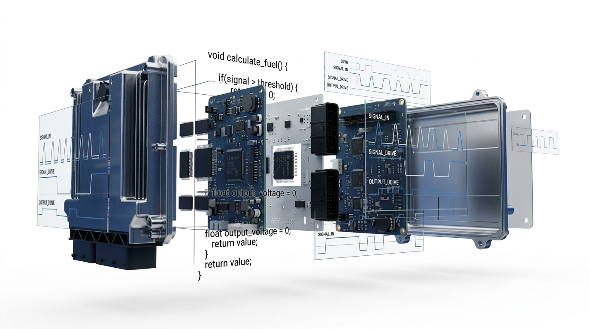

Özyeğin Üniversitesi bünyesinde güç elektroniği, araç elektroniği, gömülü sistemler ve akıllı mobilite konularına odaklanan araştırma laboratuvarı.
A research laboratory at Özyeğin University focusing on power electronics, vehicle electronics, embedded systems, and smart mobility.

MOVE Lab, mobilite ve araç elektroniği alanlarında öncü araştırmalara adanmıştır. Akademik çalışmalar ile endüstriyel uygulamalar arasındaki boşluğu doldurarak modern taşımacılık için güç elektroniği, gömülü sistemler ve akıllı mobilite çözümlerine odaklanıyoruz.
MOVE Lab is dedicated to pioneering research in mobility and vehicle electronics. By bridging the gap between academic research and industrial applications, we focus on power electronics, embedded systems, and smart mobility solutions for modern transportation.
Özyeğin Üniversitesi
Çekmeköy, İstanbul
Email: umut.basaran@ozyegin.edu.tr